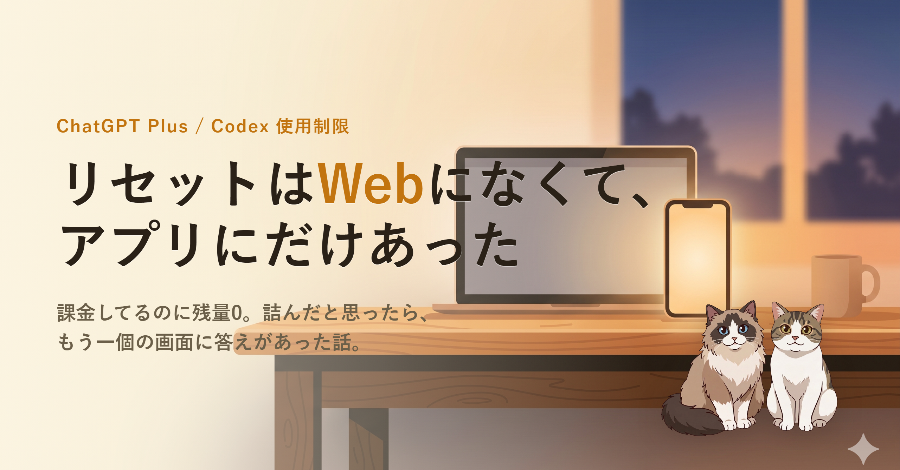

ChatGPT Plus に課金しているのに、Codex の使用制限に引っかかった。Web の画面には「クレジットの追加」と「アップグレードする」しか出ない。噂で聞いていた「無料のリセット」がどこにも見当たらない。──ところが、ダメ元でデスクトップアプリを開いたら、同じアカウントなのに「あと 1 回リセット可能」が普通に出ていた、という話です。
Codex の使用状況を Web で開いたら、残りクレジットがほぼ 0。5 時間ごとの枠も、週ごとの枠も、ほとんど使い切っていました。
そして画面に出ているボタンは 「クレジットの追加」 と 「アップグレードする」 の 2 つだけ。次のリセット時刻は表示されているのに、「今すぐ戻す」という選択肢が無い状態でした。
Codex の使用制限まわりで時々話題になる、いわゆる「無料のリセット」のことです。ネットだと free reset や banked reset のような呼び方をされています。
つまり「アカウントには紐づいているはずなのに、画面上で見つからない」状態でした。お金を出すか、時間が来るまで待つか。その二択しか提示されない画面で 30 分くらいウロウロしていました。
半分あきらめて、ブラウザではなく デスクトップアプリのほう を起動しました。プロフィールのメニューを開いたら、そこに「あと 1 回リセット可能」と普通に表示されていました。
押すと、こんな確認が出ます。
レート制限をリセットしても、作業を中断せずに続けられます。あと 1 回のリセットを利用可能です。
適用したら、さっきまで残量ほぼ 0 だった 5 時間枠が 99%、週の枠も 100% に戻りました。週のリセット日も先に動いていました。詰んだと思っていたのが、拍子抜けするくらいあっさり戻った形です。
クレジットも権利もアカウントに紐づいているはずなのに、ブラウザの画面とアプリの画面で 見えている情報が違った。これがいちばん引っかかったところです。
たぶん、機能自体はアカウント側に付いていて、Web 側の UI 反映がまだ追いついていなかった、ということなんだろうと思います。新しい機能が出たてのころに表示が遅れる、というのはまあ、よくある話ではあります。
ただ、使う側からすると、片方の画面だけ見て「無い」と判断すると普通に詰んだ気分になります。実際なりました。
大層な学びというほどのものでもないですが、書いておきます。
誰が対象でなぜ画面で差が出るのか、細かい条件はまだちゃんと把握できていません。公式の書き方にも少しブレがあるようで、ロールアウト途中の可能性もあります。そこは様子見です。
とりあえず今回の自分の結論はひとつだけ。詰んだと思ったら、もう一個の画面も見る。 それで戻ることがあります。